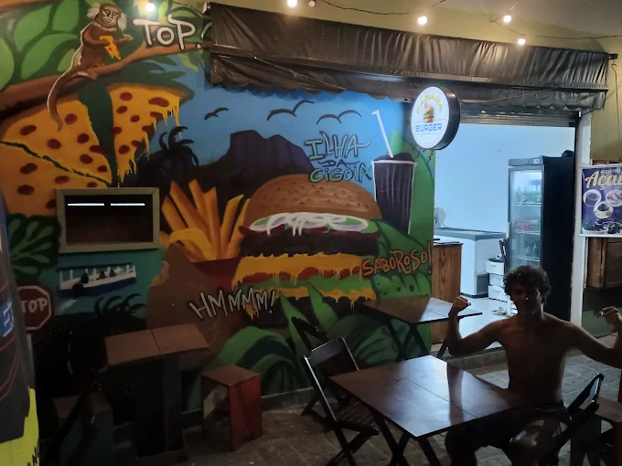
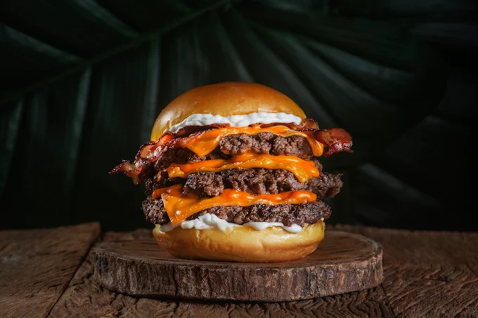
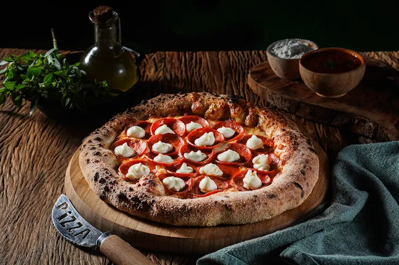
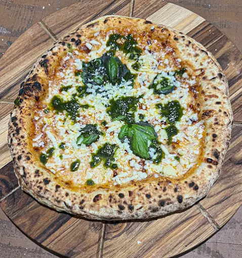
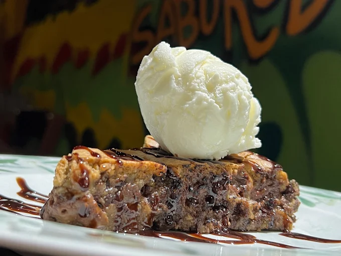
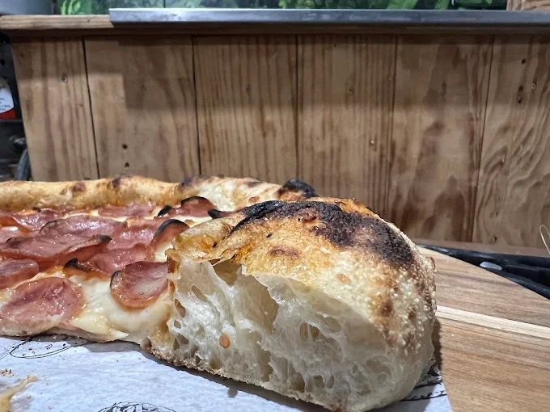
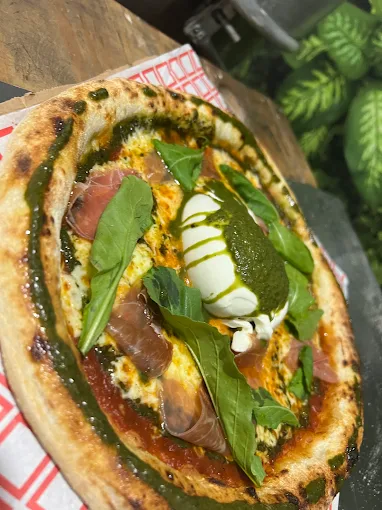
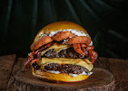

Parada Burger
Um lugar simples, descontraído e o ponto obrigatório para provar hambúrgueres artesanais na ilha.









Sobre a Hamburgueria
O Parada Burger é um daqueles lugares simples e cheios de personalidade que rapidamente viram ponto de parada obrigatório para quem passa pela ilha. Conhecida pelos seus deliciosos hambúrgueres artesanais preparados na hora, a casa também funciona muito bem para um lanche reforçado no início da noite.
O ambiente é descontraído e perfeito para quem quer comer bem sem formalidade. Entre moradores e visitantes, virou um ponto clássico para reunir amigos, tomar uma bebida gelada e experimentar burgers caprichados enquanto se curte o clima tranquilo da Ilha da Gigóia.
A Experiência
- ✓ Hambúrgueres Artesanais
- ✓ Bebida Gelada e Amigos
- ✓ Clima sem Formalidade
- ✓ Lanche Reforçado
Ambiente
Descontraído, simples e perfeito para reunir amigos.
Destaque
🍔 O ponto de parada obrigatório para aquele lanche caprichado.